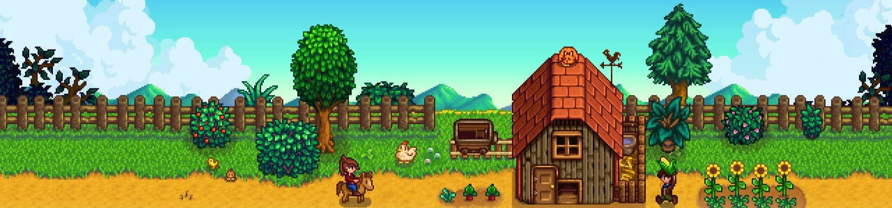

STARDEW VALLEY

Conquista el Valle con Nuestra Guía Completa de Stardew Valley ¿Quieres convertirte en el granjero más exitoso y dominar cada aspecto de Stardew Valley? Con nuestra guía avanzada, aprenderás a administrar tu granja, mejorar tus habilidades y aprovechar cada estación al máximo para construir la vida perfecta en el valle. ¿Qué encontrarás en nuestra guía? Gestión Eficiente de la Granja: Aprende cómo planificar tus cultivos, criar animales y optimizar tu tiempo para obtener las mayores ganancias posibles durante todo el año. Guía de Cultivos y Producción: Descubre qué plantar en cada estación, cómo maximizar tus cosechas y cuáles son los productos más rentables para cada etapa del juego. Relaciones y Aldeanos: Conoce los gustos, rutinas y regalos ideales para fortalecer lazos con los aldeanos, e incluso encontrar el amor en el valle. Minería, Pesca y Recolección: Domina las cuevas, aprende a pescar como un experto y recolecta materiales raros para fabricar herramientas, mejorar tu granja y desbloquear nuevas áreas. Misiones y Progresión: Te mostramos cómo avanzar en la historia, completar las misiones del Centro Cívico y acceder a los secretos más profundos del juego. ¿Por qué elegir nuestra guía? Actualizaciones Constantes: Stardew Valley sigue evolucionando con nuevos contenidos, y nuestra guía se mantiene actualizada con todas las versiones y expansiones. Guía para Todos los Niveles: Tanto si recién empezás como si ya llevás varias partidas, encontrarás estrategias útiles para mejorar tu experiencia de juego. Consejos de Jugadores Expertos: Incluimos técnicas y métodos probados por jugadores con cientos de horas en el juego para que aproveches cada recurso al máximo. Fácil de Seguir y Aplicar: Cada consejo está explicado de forma clara y ordenada, para que puedas aplicarlo fácilmente y ver resultados desde el primer día. ¡No más días desperdiciados ni cultivos perdidos! Si quieres dominar Stardew Valley y llevar tu granja al siguiente nivel, esta guía es la herramienta perfecta. Con ella, cada día será una nueva oportunidad para crecer, mejorar y construir tu propio paraíso en el valle. Haz clic ahora y empieza a dominar Stardew Valley hoy mismo.